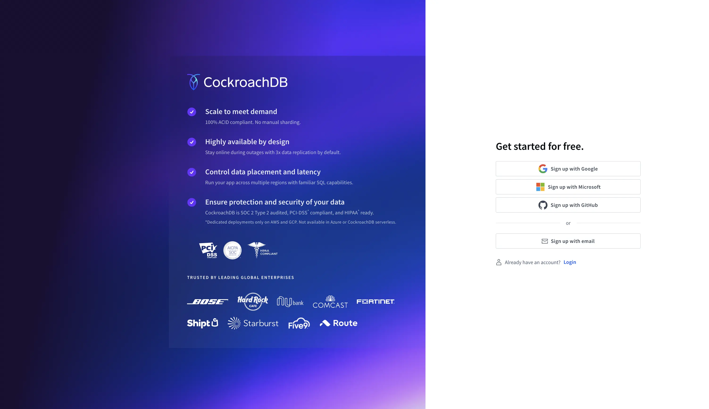

portfolio
download.zip & david.mov
I've worked on some sites for a blogpost advertising Google's new top-level-domains.
The screen overlay kinda doesn't work in an iframe. @lasse plz fix.
cockroachlabs.cloud
I currently work on growth, core user facing features, and sql execution in the console at Cockroach Labs.

papertrail
While working at NYT R&D, I built an OCR tool that used newer OCR models to bulk-transcribe newspapers into a digital format.